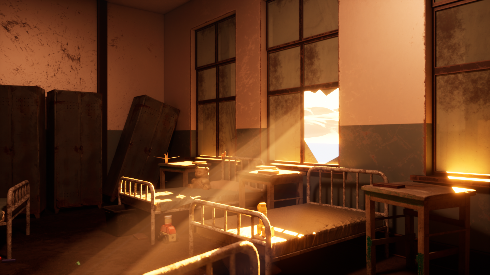
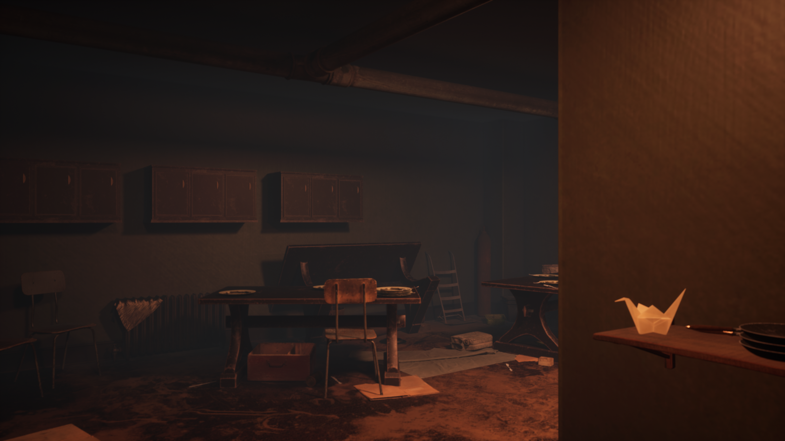
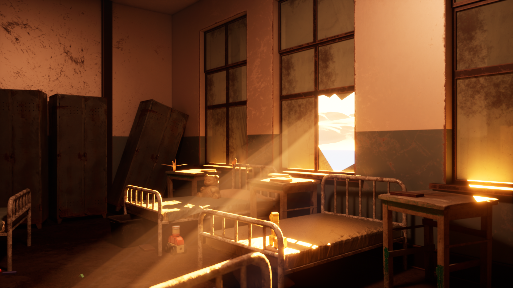
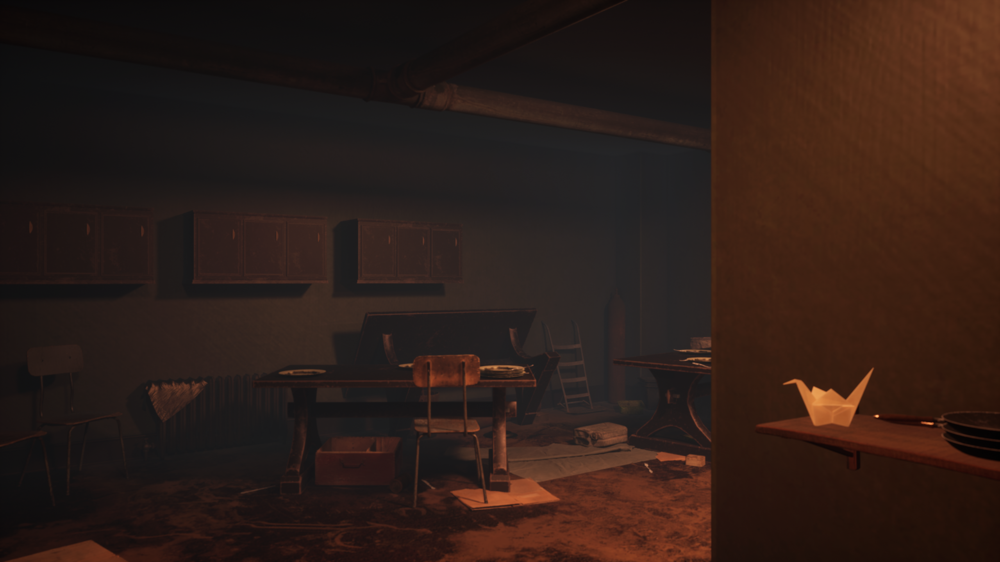

Home is an abandoned orphanage set in the late 1900s. This was the project I ended up submitting as my final year assignment. The game's premise was that you played as a detective, attempting to unravel the mystery of why this orphanage was abandoned. To solve this mystery, the player needed to find all of the paper cranes scattered throughout the environment which each told the player some information about it's abandonment. Despite the challenges that came with this project, I had a lot of fun working on it and would love to create something on a bigger scale in the future. All the environments, models (some) and textures were made by myself using MAYA, Substance Painter and Unreal Engine 5.


Deceit is a 3D environment based on an underground mine and a glow worm cave. Inspired by the fascinating glow worm caves found in real life, this creation started as a university assignment and after revisiting to make thorough tweaks and refinements, I've re-rendered and showcased the finished version here. Hope y'all are messing with it! All the environments, models and textures were made by myself using 3DS Max, Substance Painter and Unreal Engine 5.